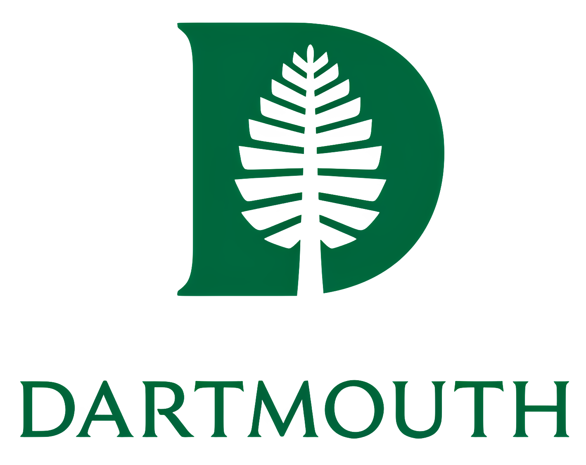
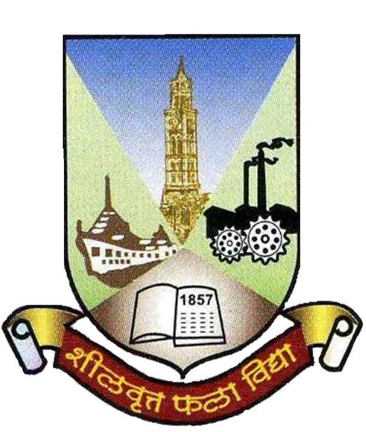

Education and awards
Degrees
-
Aug 2021 to Jun 2027 (expected)
PhD, Microbiology and Immunology
Geisel School of Medicine at Dartmouth, Hanover, NH
Thesis: Bacteroides as a potential CF probiotic. Advisor: George A. O'Toole.
Includes the Microbial Diversity course at the Marine Biological Laboratory, Woods Hole (summer 2025).

-
Aug 2016 to Jun 2018
MSc, Biotechnology
Symbiosis International University, Pune, India
Thesis: Isolation and characterization of lactic acid bacteria from Indian foods, and in vitro probiotic evaluation.
GPA 9.21/10, rank 1 of 30.
-
Aug 2013 to Jun 2016
BSc, Biotechnology
University of Mumbai, India
GPA 6.85/7.0, rank 4 of 30.

Awards
-
Sep 2026
Outstanding Presentation
2026 Microbial Dark Matter Symposium, hosted by Zymo Research
Awarded for the best presentation at the symposium.
-
Aug 2025
M2P2 Scholarship
Department of Microbiology and Immunology, Dartmouth
Covers tuition, room, board, or travel for off-campus courses during the PhD.
-
Dec 2018
DST INSPIRE Fellowship
Ministry of Science and Technology, Government of India
Given to the top-ranked student at each Indian university to join a funded PhD program. I did not accept it.
-
Jun 2018
CSIR-UGC NET-LS
Ministry of Science and Technology, Government of India
National exam to qualify for research fellowships in India. All India Rank 22.
-
May to Jul 2017
Summer Research Fellowship
Indian Academy of Sciences
National fellowship that places early-career students in research institutes across India. Mine was at the Institute of Nuclear Medicine and Allied Sciences, Delhi.
-
Dec 2016 to Jun 2018
PG Merit Scholarship
Symbiosis International University
Given to the rank 1 student in the MSc program. A 50% tuition waiver for every semester.
-
Dec 2015
Veronica Rodriguez Award
Tata Institute of Fundamental Research
For leadership and excellence as a member of Collaborative Undergraduate Biology Education (CUBE).
Skills
- Programming
- R, Python, Linux command line. Working knowledge of bash scripting.
- Bioinformatics
- Genome assembly and annotation, variant analysis, comparative genomics, phylogenetics, transcriptomics, metagenomics, microbiome analysis.
- Wet lab
- Anaerobic culturing, molecular cloning, bacterial genetics, experimental evolution, recombinant protein expression.
- Languages
- Marathi (fluent), Hindi (conversational), Sanskrit (basic).